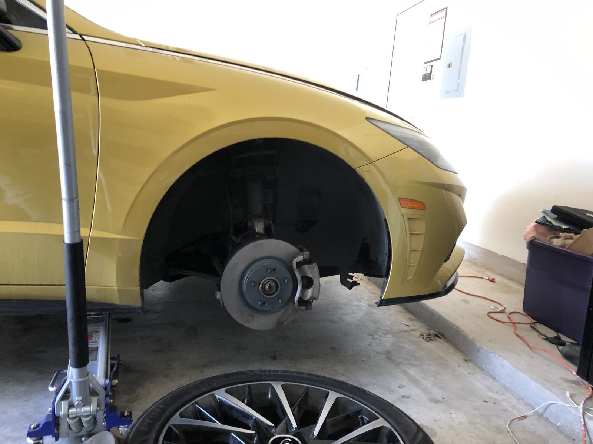

CH-01
Diagnostics
Chris goes over the car, finds the real problem and shows it to you before anything gets fixed.
- Warning lights
- Won't start
- Drivability
Mobile mechanic · Bastrop, TX
Diagnostics, battery swaps, spark plugs and engine repairs around Bastrop. Problem shown before work starts.

System check
Diagnostics and repairs done at your location.
CH-01
Chris goes over the car, finds the real problem and shows it to you before anything gets fixed.
CH-02
A dead battery swapped where the car is parked, even on a Sunday evening.
CH-03
Misfires fixed with new spark plugs and ignition coils, right in your driveway.
CH-04
From an old engine that sat for years to a car that quit on the road, we get it running.
CH-05
The repair comes to the car: driveway, garage or the side of the road.
CH-06
Routine upkeep done on site, so the car does not have to go anywhere.
Driver log
4.1 average over 9 Google reviews
Cynthia 9.GoogleChris has many years experience with vehicles, always going over every detail to ensure that he’s targeted the problem areas leaving nothing to chance. You will not find a more detailed mechanic that ensures not only quality care , but ensures that every aspect and detail to the problem has been addressed.
RodGoogleChris came out and diagnosed an old Chevy 4.3 that had been sitting for years. Had it up and running in about two an a half hours. Great job and friendly service.
Jasmine B.GoogleGenuinely so kind and so helpful, yesterday he rescued me off of 95, and escorted me back home. Helped me for literal *hours* so I wouldn't be left without exhausting every single option to ease my mind. Took multiple trips out to grab parts, and today he came by and fixed me up, changed out my spark plugs and installed a new coil. Also, incredibly professional and so very kind. Would and will utilize again!
Nicole H.GoogleAmazing mobile service replacing my car battery on a Sunday evening. Very professional and accommodating at a reasonable price. Highly recommend!
Live feed


Who's under the hood
Chris is a mechanic who brings the shop to the car. He goes over every detail and gets your approval before touching anything.
He works out of Bastrop and covers the area nearby, from dead batteries to engines that sat for years.
Mobile service: call first and we will come to the car.